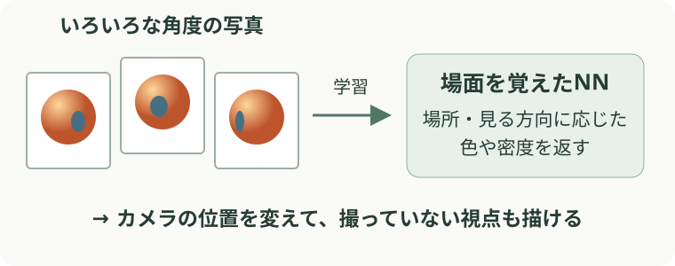

分野・タスクから知る · 3D and Spatial Understanding
3D・空間理解
3D・空間理解では、カメラや物体の位置と、場面の立体的な形を扱います。画像から位置を推定するSLAMや、新しい視点を描くNeRFなどを、図と映像で説明します。
自分の位置と周囲の地図
SLAMは、移動中の観測から「自分がどこにいるか」と「周りに何がどこにあるか」を同時に推定する問題です。ロボットやカメラが移動した経路を知るのに使います。次はORB-SLAM3による推定例です。
入力：TUM VIの「outdoors1」で撮影した連続画像と、加速度・角速度。下は同じ走行中の2時点の右カメラ画像です。
{kind=link}
{kind=link}
出典：TUM VI：dataset-outdoors1_512_16 ↗。
出力：同じ「outdoors1」を処理して推定した移動軌跡。赤はこの走行だけで推定、青は以前の走行で作った地図も使って推定した結果です。
赤・青とも推定結果。青はmagistrale2の地図を利用。座標軸を除き90度回転して表示。出典：Figure 6 ↗。
立体的な形の復元
3D再構成は、複数の写真や深度の計測などから、物体や部屋の立体的な形を復元する問題です。建物の記録や、ロボットが周囲の形を把握することに役立ちます。
3Dの場面を表す方法の一つが、位置と色を持つ点の集まりです。
点群による表現
下の部屋は、壁や床、椅子を色付きの点で表しています。各点は3D空間での位置を持つので、視点を変えて立体として眺められます。深度センサなどの計測結果にも使われる表現です。
{kind=link}
出典：Open3D：点群のダウンサンプリング例 ↗。公開画像を引用。 画像を拡大 ↗
撮影していない視点の画像
新規視点合成は、撮影した画像を手がかりに、別の位置から見た画像を作る問題です。商品の立体表示やVRなどに使えます。もっともらしい画像を描くことと、正確な形を測ることは区別して評価します。次の二つは、場面の表し方が異なる方法です。
3D Gaussian Splatting
複数の写真から、視点を動かしても写真のように見える場面を作ります。点群の点に広がりと透明度を持たせたような、小さな色の粒の集まりを学習します。
動画は、復元した場面の中で視点を動かした結果です。自転車と奥の建物の位置関係が変わり、平面の写真を拡大するだけでは作れない見え方になります。
NeRF
場面の見え方をNNに覚えさせる方法もあります。いろいろな角度の写真から学習し、撮影していない視点の画像を描くのがNeRFです。

NeRF：場面をNNで表し、新しい視点から描く。教材用の模式図。
学習するのは、その場面専用のNNです。入力に3Dの位置と見る方向を与えると、その場所の色や密度を返します。密度は、そこにどれくらい物があるかの手がかりです。
新しい画像を作るときは、カメラから見える方向に沿ってNNへ何度も問い合わせ、返ってきた色と密度を重ね合わせます。こうして、写真に写っていた形や模様を別の角度から描きます。
NeRF：colorspout ↗。Mildenhall et al.（2020）の著者公開結果 colorspout_200k_rgb。撮影していない視点の生成結果。
NNが予測するのは分類ラベルではなく、3D空間の各場所の見え方です。カメラの位置を変えて問い合わせることで、同じ物体を回り込むような映像を作れます。
奥行きに応じた見え方や、物体が重なって隠れる部分、反射の変化を確認できます。生成画像の自然さと、正確な3D表面の復元は別に評価します。